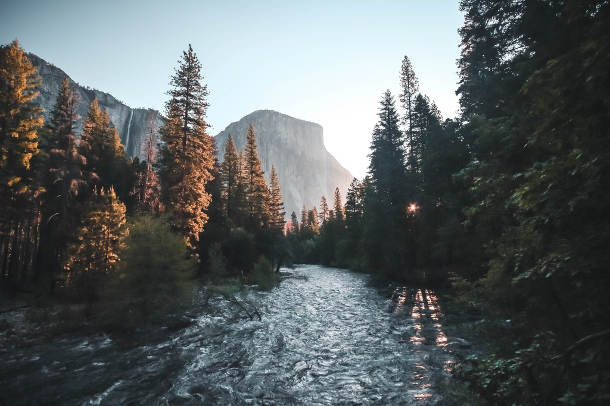

FAQ
Frequently asked questions:
- Is this a good trip for kids?
- Absolutely this is a good trip for children of all ages. We have found however that children over the age of 8 seem to enjoy it more overall (And parents especially enjoy it more if their children are all over 8). Each trip is lead by a highly capable guide who are fully certified to keep you and your children safe while you have a great
- Is whitewater rafting safe?
- As with all adventure sports, there is an element of inherent risk. You can rest assured we have done everything in our power to keep everyone as safe as possible. some of these measures include all guides are certified in Wilderness First aid and all start with at least 3 years of rafting experience. The most common injuries are sunburns.Everyone on commercial rafting trips wears coast guard approved life vest or personal flotation device (PFD).
- How far in advance should I book my trip?
- If you have specific dates you need, we recommend booking a year or more in advance. If you can be more flexible 6 months in advance is usually sufficient.